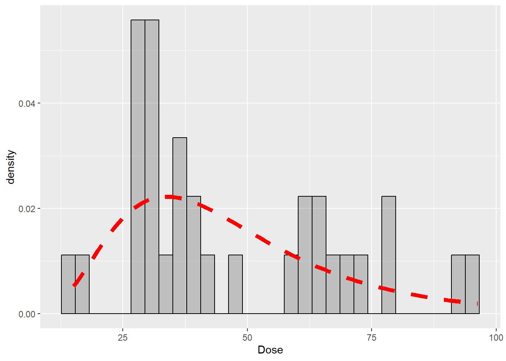
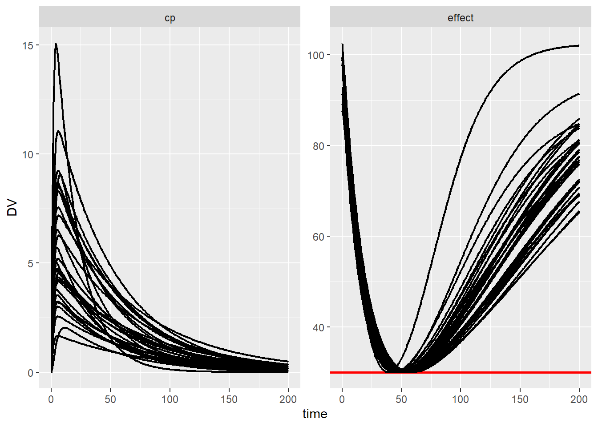

In the previous tutorial optiDoseR for nlmixr2, the dose for the typical patient from the warfarin PKPD project was estimated. However, PKPD parameters were estimated with inter-individual variability for 32 patients. In this tutorial, individual doses are estimated for all 32 patients.
We assume, that we already have fitted the warfarin PKPD data set with nlmixr2, as in the previous tutorial.
We set up once again the OptiProject. Nnote, in the previous tutorial, the elements were added seperately, but we can add them all together in a pipe.
warfProj <- newOptiProject("nlmixr2") %>%
addPmxRun(fit) %>%
addConstraintAUC(state = "effect",
limit = 30,
pen_time = c(0,200),
eval_time = 200,
pen_values="below") %>%
addSecondaryAUC(state = "cp",
pen_values = "low",
pen_time = c(0,200),
eval_time = 200) %>%
addDoseLevel(time=0,ini_est=100)We use again the saveOptiProject function. To estimate
the individual doses, we set pop = TRUE, so the data set
includes estimated PKPD parameters for all individual patients. The
argument iiv = TRUE adds inter-individual parameters to the
estimated doses. Since we want to estimate the doses for the individuals
in the data set, we set sim = FALSE. With sim = TRUE,
new patients would be generated by sampling from the estimated
inter-individual variability of the PKPD parameters. We again run the
dose estimation directly with run_nlmixr2 = TRUE.
saveOptiProject(warfProj,
name = "warfOptiModel_iiv",
pop = TRUE,
iiv = TRUE,
sim = FALSE,
run_nlmixr2 = TRUE)The estimated individual doses are visualized in a histogram. In multiple analysis, we found that individual doses often follow a log-normal distribution, here indicated as a red line. From the estimated individual doses, or the estimated random-effects distribution, a typical dose for which a certain proportion of patients fulfill the therapeutic target, as presented in this paper.
## `stat_bin()` using `bins = 30`. Pick better value with `binwidth`.
Again, we check whether the estimated doses really fulfill the
therapeutic goal in all individual patients. For this, we again perform
simulations with the estimated individual doses using the
rxSolve function.
ev_iiv <- eventTable() %>%
add.dosing(dose = 1) %>%
add.sampling(0:200) %>%
et(id=unique(warfOptiModel_iiv_data$ID))
cov_data_iiv <- warfOptiModel_iiv_data %>%
filter(TIME==0) %>%
select(-c(TIME,DV,AMT,EVID,MDV))
parm_data <- data.frame(eta.F1 = as.vector(ranef(warfOptiModel_iiv_fit)[,2])) %>%
mutate(lF1 = fixef(warfOptiModel_iiv_fit)[1])
sim_iiv <- rxSolve(warfOptiModel_iiv_fit,
parm_data,
events = ev_iiv,
iCov=cov_data_iiv)
sim_iiv_data <- as.data.frame(sim_iiv) %>%
pivot_longer(cols=c("cp","effect"),
names_to = "Compartment",
values_to = "DV")As can be seen, with the individual estimated doses visualized in the histogram above, all patients exactly reach the predefined therapeutic target of 30 in the effect compartment. This means, that the estimation worked perfectly.
ggplot(sim_iiv_data,aes(x=time,y=DV,group=id)) +
geom_hline(data = sim_typical_data %>%
filter(Compartment == "effect"),
aes(yintercept = 30), col = "red", linewidth=1) +
geom_line(linewidth=0.8) +
facet_wrap(~Compartment, scales = "free")